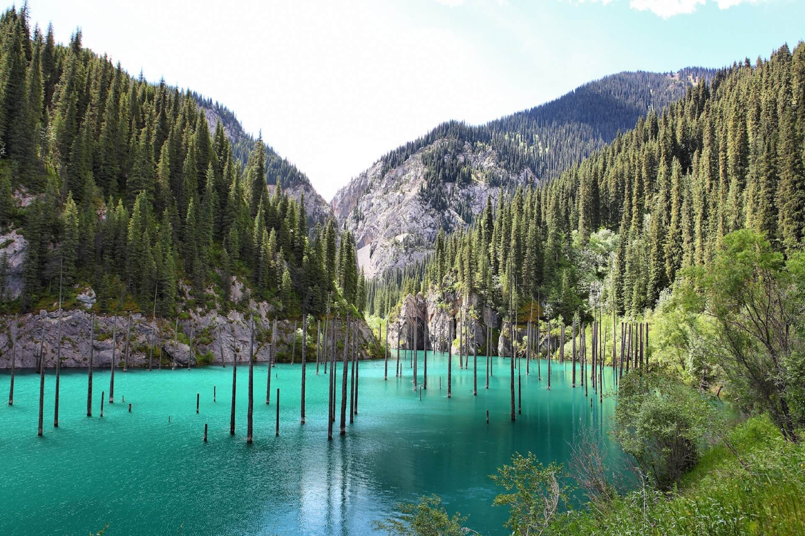

on Monday starts at 09.00 and ends at 09.50
on Monday starts at 10.00 and ends at 10.50
on Tuesday starts at 11.00 and ends at 11.50
on Friday starts at 16.00 and ends at 16.50
on Friday starts at 17.00 and ends at 17.50
| poem about nature | poem about love Я помню чудное мгновенье |
|
|---|---|---|
| Қыс | My Heart's in the Highlands | |
Ақ киімді, денелі, ақ сақалды,
Соқыр-мылқау танымас тірі жанды,
Үсті-басы — ақ қырау, тусі суық,
Басқан жері сықырлап, келіп қалды.
Дем алысы — үскірік, аяз бен қар,
Кәрі құдаң — қыс келіп, әлек салды.
Ұшпадай бөркін киген оқшырайтып,
Аязбенен қызарып ажарланды.
Бұлыттай қасы жауып екі көзін,
Басын сіліксе, қар жауып, мазаңды алды.
Борандай бұрқ-сарқ етіп долданғанда,
Алты қанат ақ орда үй шайқалды.
Әуес көріп жүгірген жас балалар,
Беті-қолы домбығып, үсік шалды,
Шидем мен тон қабаттап киген малшы
Бет қарауға шыдамай сырт айналды.
Қар тепкенге қажымас қайран жылқы
Титығы құруына тез тақалды.
Қыспен бірге тұмсығын салды қасқыр
Малшыларым, қор қылма итке малды.
Соныға малды жайып, күзетіңдер,
Ұйқы өлтірмес, қайрат қыл, бұз қамалды!
Ит жегенше Қондыбай, Қанай* жесін,
Құр жібер мына антұрған кәрі шалды.
|
Farewell to the Highlands, farewell to the North,
The birth-place of Valour, the country of Worth;
Wherever I wander, wherever I rove,
The hills of the Highlands for ever I love.
My heart's in the Highlands, my heart is not here,
My heart's in the Highlands, a-chasing the deer;
Chasing the wild-deer, and following the roe,
My heart's in the Highlands, wherever I go.
Farewell to the mountains, high-cover'd with snow,
Farewell to the straths and green vallies below;
Farewell to the forests and wild-hanging woods,
Farewell to the torrents and loud-pouring floods.
|
Я помню чудное мгновенье:
Передо мной явилась ты,
Как мимолетное виденье,
Как гений чистой красоты.
В томленьях грусти безнадежной,
В тревогах шумной суеты,
Звучал мне долго голос нежный
И снились милые черты.
Шли годы. Бурь порыв мятежный
Рассеял прежние мечты,
И я забыл твой голос нежный,
Твои небесные черты.
В глуши, во мраке заточенья
Тянулись тихо дни мои
Без божества, без вдохновенья,
Без слез, без жизни, без любви.
Душе настало пробужденье:
И вот опять явилась ты,
Как мимолетное виденье,
Как гений чистой красоты.
И сердце бьется в упоенье,
И для него воскресли вновь
И божество, и вдохновенье,
И жизнь, и слезы, и любовь.
|
| Абай Құнанбаев, (1888) | Robert Burns, (1789) | Александр Пушкин, (1827) |
Donald Knuth:
To summarize: We have seen that computer programming is an art, because it applies accumulated knowledge to the world, because it requires skill and ingenuity, and especially because it produces objects of beauty. A programmer who subconsciously views himself as an artist will enjoy what he does and will do it better. Therefore we can be glad that people who lecture at computer conferences speak of the state of the Art.
Bill Gates about the Art of programming book by Donald Knuth:
definetely send me a resume if you finish thisfriendlyfindishly difficult book
According to UNICEF and World Health Organization data, Kazakhstan was the 1st among suicide for teenage girls and 2nd among teenage boys in 2014
Can you find a7 from the Fibbonacci sequence?
Unfortunately, Bonnie & Clyde keep inspiring more and more young people
Unfortunately, Bonnie & Clyde keep inspiring more and more young people

In an especially favorable Mother Nature to the Kazakh land. She gave generously of her bowels minerals. It is common knowledge now that there is no element of the periodic table, which could not be detected in the mountains or the steppes of Kazakhstan.
However, these untold riches for centuries were unknown to the world. Not only deep ¬ lateral hidden underground wealth, but even that can be seen with the naked eye, did not notice the rare foreigners, travelers, who at various times and for various reasons, been in our Kazakhstan. In his diaries and books they wrote about him as a stern, lean on vegetation region of endless steppes and huge sand masses.
©Nature of Kazakhstan
Aktau Beach :
It is hard to find such a magnificent beach in Kazakhstan but you will be glad as there is one. This beach has both rocky hills and sandy beaches along the seaside. There are also several modern resorts on the coast to the south of the city.
Mountain-piala Sherkala :
Aktau has its own mountain canyons known as Sherkala. It looks more like a Hidden Beast but is also resembles a bowl and a tent. You can feel yourself standing on top of the world while at Sherkal.
©Nature of Kazakhstan